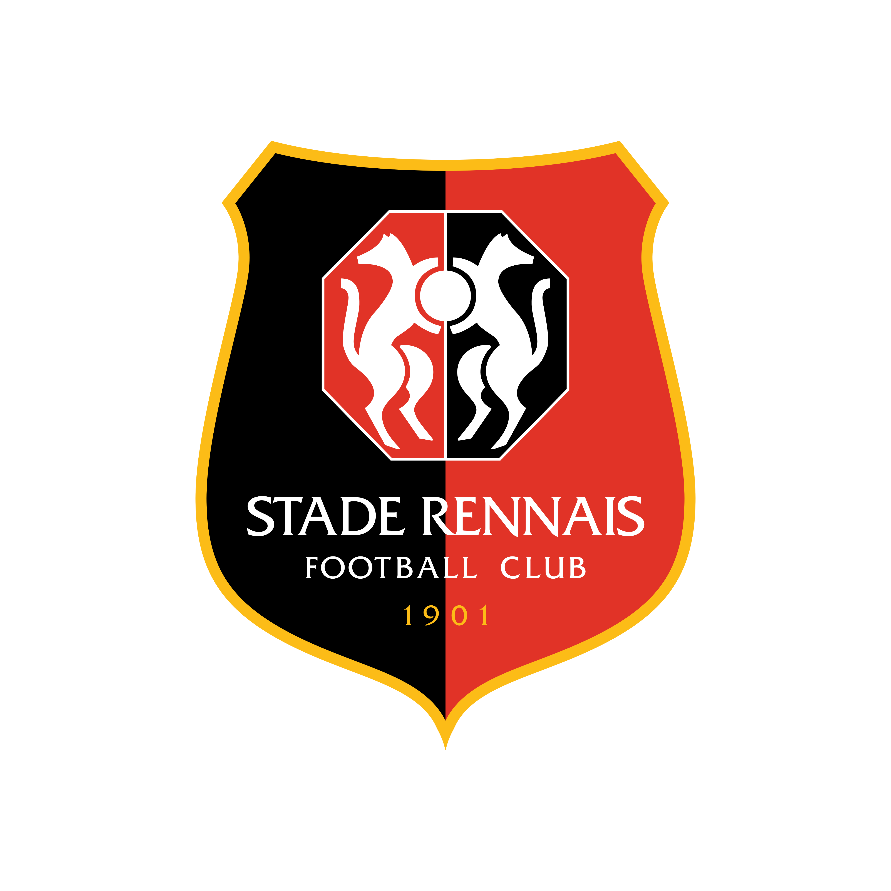
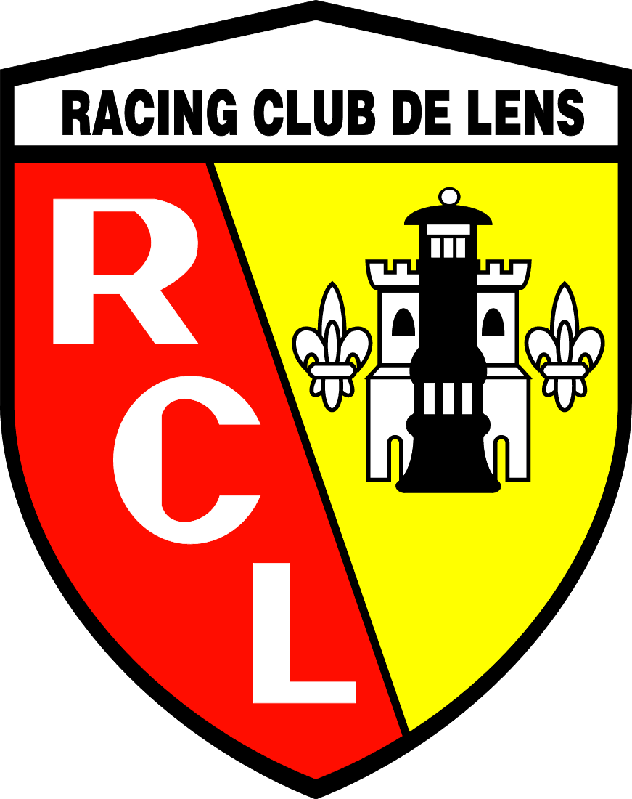
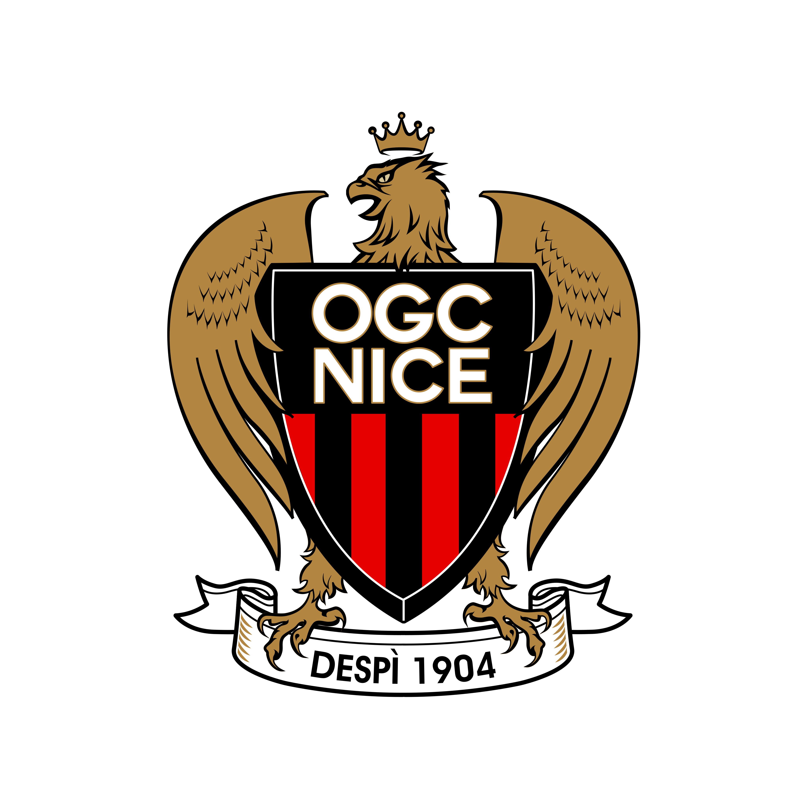
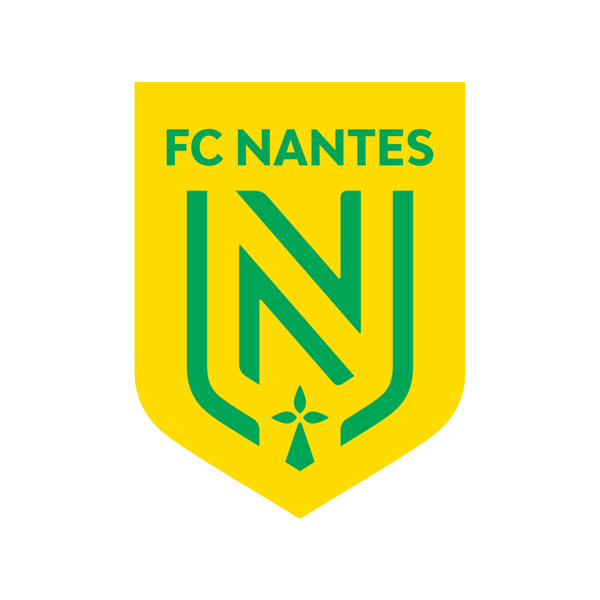

Primera División Francesa
Ligue 1
Máximos goleadores
| Jugador | Equipo | Goles |
|---|
Máximos asistentes
| Jugador | Equipo | Asistencias | |
|---|---|---|---|
| 1 | Kylian Mbappé |
|
17 |
| 2 | Lionel Messi |
|
14 |
| 3 | Benjamin Bourigeaud |
 Rennes
|
12 |
| 4 | Jonathan Clauss |
 Lens
|
11 |
| 5 | Dimitri Payet |
|
10 |
| 6 | Hamari Traoré | Rennes | 10 |
| 7 | Kevin Volland | Monaco | 9 |
| 8 | Amine Gouiri |
 Niza
|
9 |
| 9 | Lovro Majer | Rennes | 8 |
| 10 | Moses Simon |
 Nantes
|
8 |
Mejores porteros
| Jugador | Equipo | Goles encajados/Partidos jugados | |
|---|---|---|---|
| 1 | Keylor Navas |
|
0,86 |
| 2 | Walter Benítez | Niza | 0,95 |
| 3 | Alfred Gomis | Rennes | 1 |
| 4 | Alexander Nübel | Mónaco | 1,05 |
| 5 | Pau López |
|
1,07 |
| 6 | Predrag Rajkovic | Reims | 1,16 |
| 7 | Matz Sels | Estrasburgo | 1,16 |
| 8 | Jean Leca | Lens | 1,22 |
| 9 | Alban Lafont | Nantes | 1,26 |
| 10 | Anthony Lopes | Olympique de Lyon | 1,32 |